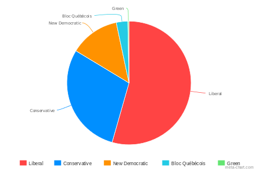

The Liberal Party

Justin Trudeau
Party Leadership
OVER THE PAST 10 YEARS it has become harder for millions of Canadians to get ahead. Some people think the solution is to continue on the course we’re on, giving benefits to the wealthy and making cuts to everything else. I have a different plan, to invest immediately in jobs and growth and lower taxes for the middle-class.

Deputy Minister

Deputy Minister
Our Policies
Our approach to issues
Investing in our communities is not just about creating good jobs and economic growth. It is also about building communities that we are proud to call home.
With historic new investments in social infrastructure, we will achieve both. With historic new investments in social infrastructure, we will achieve both.
Our History
Since 1892...
Investing in our communities is not just about creating good jobs and economic growth. It is also about building communities that we are proud to call home.
With historic new investments in social infrastructure, we will achieve both. With historic new investments in social infrastructure, we will achieve both.
Read More
Our Representation
Majority Representation
We have 234 seats in the House of Representatives and 124 MPs in the House of Commons.
